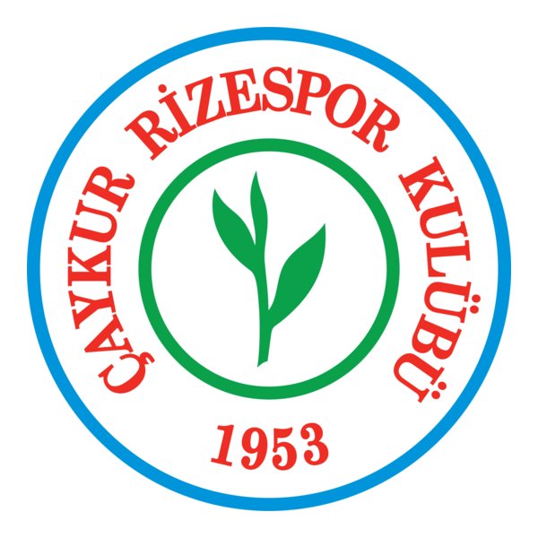

Takımımız: Çaykur Rizespor
Kuruluş Yılı: 1953
Renkleri: Yeşil – Mavi
Stadyumu: Çaykur Didi Stadyumu
Lig Durumu: Süper Lig 2024-2025 Sezonu
Başarılar
- 1. Lig Şampiyonu (2017-2018)
- Türkiye Kupası Çeyrek Final (2019)
- Süper Lig'e birçok kez yükselme başarısı